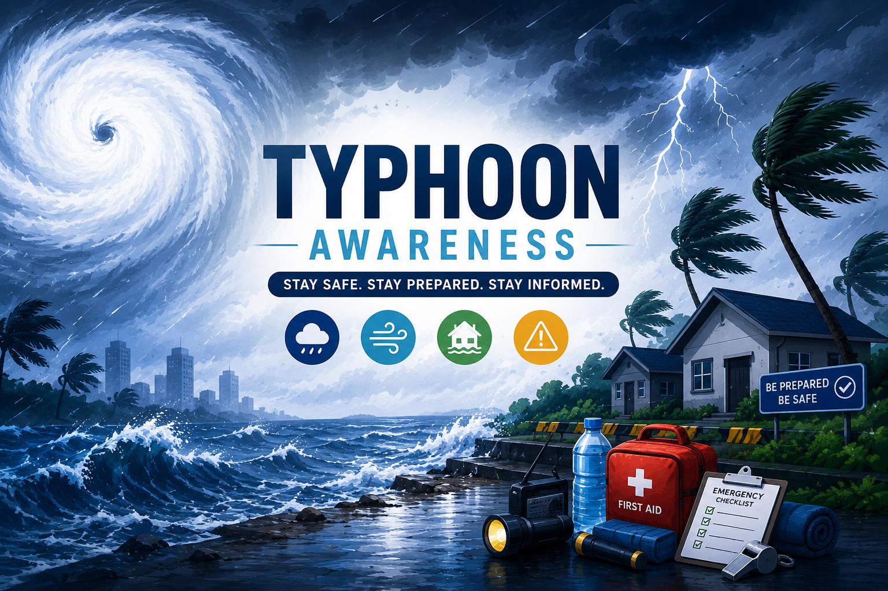
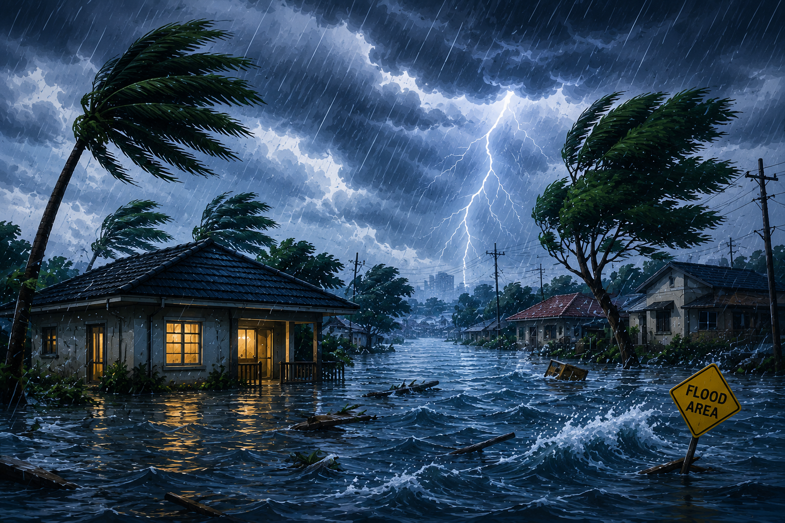

| HOME | TYPES | PREPARE | SAFETY TIPS | NEWS | ABOUT |

Typhoons are one of the most common and
destructive natural disasters experienced
in many countries, especially in the Philippines.
They bring strong winds, heavy rainfall,
flooding, and landslides that can damage homes,
infrastructure, agriculture, and even put lives at risk.
Because typhoons can develop quickly,
it is important for everyone to stay informed about
weather updates and follow safety guidelines.
Awareness, proper planning, and preparedness
before, during, and after a typhoon can
greatly reduce its impact and help save lives.

 Tropical Depression Winds: 61 km/h or less Weakest form of a tropical cyclone. |
 Tropical Storm Winds: 62–88 km/h Stronger than a depression but weaker than a typhoon. |
 Severe Tropical Storm Winds: 89–117 km/h Stronger storm that may cause heavy rains and strong winds. |
 Typhoon Winds: 118–184 km/h Powerful storm that can cause destructive winds, heavy rainfall, flooding, landslides, and major damage. |
 Super Typhoon Winds: 185 km/h and above Strongest type of typhoon that can cause widespread devastation. |
Typhoons are classified based on their maximum
sustained wind speed, which indicates the strength
and severity of the storm. Each category represents
a different level of intensity, from weaker
tropical depressions to extremely destructive super typhoons.
As wind speeds increase, the likelihood of heavy rainfall,
flash floods, landslides, storm surges, and widespread
damage also increases. By understanding these classifications,
individuals and communities can better assess potential risks,
respond appropriately to weather warnings,
and take timely actions to ensure their safety
and minimize the impact of natural disasters.

Preparing before a typhoon can help protect lives and reduce damage to property. Follow these important safety measures before the storm arrives.
 Food Prepare enough canned goods and ready-to-eat food for at least 3 days. |
 Water Store clean drinking water for every member of the family. |
 Flashlight Keep flashlights and extra batteries ready during power outages. |
 First Aid Prepare medicines, bandages, alcohol, and other emergency supplies. |
 Charge Devices Fully charge your phone and power bank before the typhoon. |
 Radio Use a battery-powered radio to receive weather updates. |

|
Emergency Checklist
✅ Prepare enough food and water. |